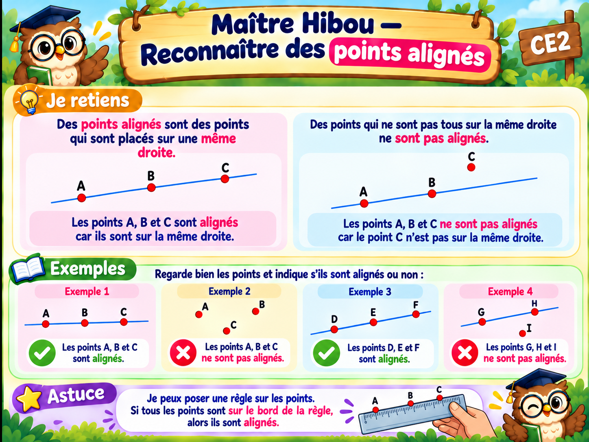

← Mes leçons de maths
Géométrie CE2

À toi de jouer !
Observe les dessins puis réponds aux 10 questions. Vérifie avant de continuer.
Vérifier
Exercice suivant →
✅ J’ai compris cette leçon
Recommencer